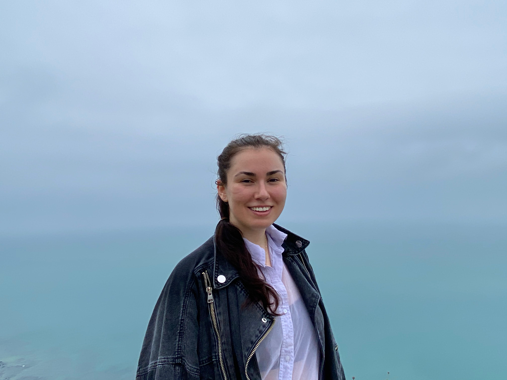

The Beginning
Sophia Obuch Cakova and Shivani Mathur met in 2020 in what can only be described as a cathedral of art—the soaring 23-meter-high foyer at Central Saint Martins, King’s Cross, London. A space of remarkable scale and light, crowned by a ceiling of glass, through which the sky is visible. And yet, to those who enter with creative purpose, there is no ceiling at all. The vision is unlimited.
Sharing the Vision
Today, we want to bring that vision to you. The freedom we enjoyed, the boundless energy we experienced, the delicate techniques we learned—and unlearned—we want to share.
This is not a traditional class. It is a conversation, a transmission, a shared moment of insight.
We’re calling it “No Ceiling”—because that’s what it felt like, and that’s what it still is.
Freedom

About Sophia Obuch Cakova
Sophia lives between Bratislava and Croatia and frequently travels across Europe, especially to Vienna and London. A dedicated oil painter, she creates emotionally rich and technically refined work. She shares her life with her husband, her dog, and a rabbit. Sophia is an tutors and regularly holds art classes in the forest in Slovakia. Her sessions foster skill and expression.

About Shivani Mathur
Shivani’s journey brought her from Lucknow to a job as an investment banker in London in 2000, where she became very successful in an environment with few women. The trading floor doubled as an artist’s laboratory, and since 2008, she began to paint alongside her very demanding career. As she began exhibiting, she became known as a trader by day and a painter by night. In 2020, she enrolled in the master’s programme in Art and Science at Central Saint Martins, where she met Sophia. With a background in mathematics, Shivani’s work often begins with structure and measurement, but she gradually dismantles these rules, allowing intuitive flow to take over. Her process has been described as an abstraction of precision.

Join Us
Together, we’re opening a space for creativity—a gathering, a workshop, a studio without walls. A place to share vision, experience, and freedom. A place where there is, truly, no glass ceiling.
The session
üé® Workshop Overview
üïô 10:00 AM ‚Äì 1:00 PM, followed by a light lunch, networking, and sharing of experiences.
This hands-on session invites you to explore the journey from structure to abstraction through listening, creating, reflecting, and exchanging.
ü߆ Part 1: Listening (20 minutes)
- A brief introduction to the history of abstraction
- Spotlight on two influential artists: Pablo Picasso and Gerhard Richter
- Laying the groundwork for your own creative process
✍️ Part 2: Experiencing (2 hours)
- Create four original artworks, each representing a step in your personal abstraction process
- Begin with a physical or realistic image, and progress toward a fully abstract piece
üßê Part 3: Analyzing (40 minutes)
- Reflect on and analyze your own creative progression
- Engage in group discussion to explore how you and others transitioned from realism to abstraction
üéÅ Final Exchange & Takeaway
- At the end of the session, you’ll select one of your four artworks to take home
- You’ll also have the option to frame that selected piece — one frame is included in the cost of the program
- The remaining three artworks will be exchanged with other participants, so you’ll leave with a collection of four works: one of your own and three from others
Select a Date
- Sat, 2nd August 2025, Hyde Park London
- Sun, 3rd August 2025
- Sun, 10 August 2025, Bratislava.